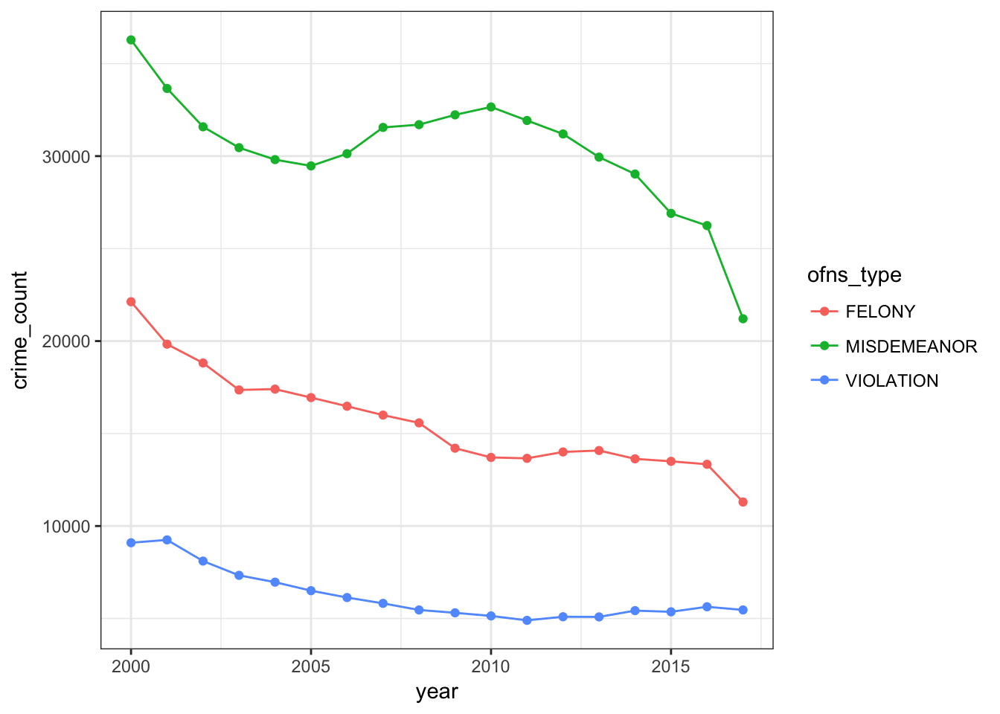
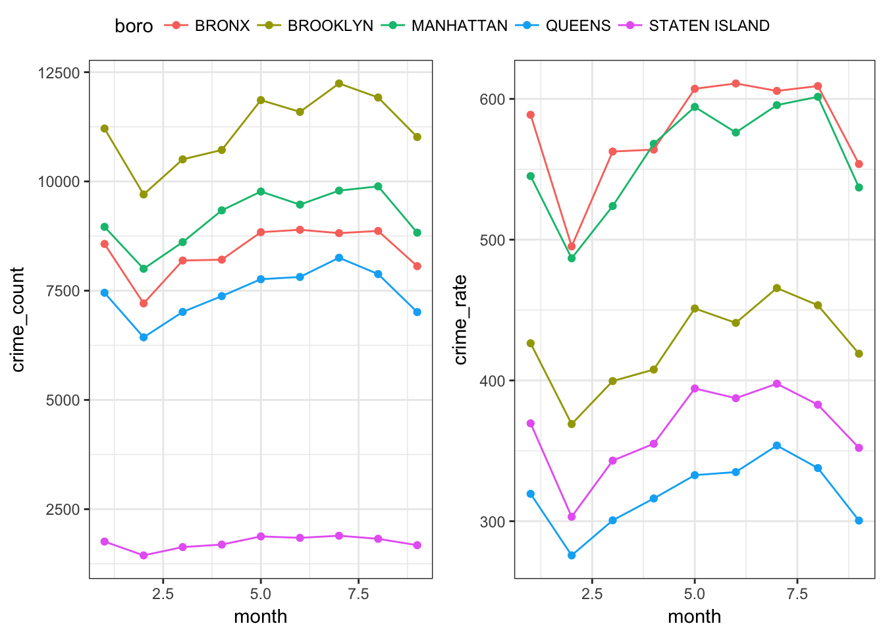

The historic data shows the trend of crimes per month from 2000 to 2016. The crime number per month is calculated by dividing total crime number by 12 months (9 for 2017 since the data of 2017 is not complete yet). The results indicates that the prevalence of Misdemeanor is significantly higher than Violation and Felony.
We can see that overall the crime number per month are decreasing since 2000. However, misdemeanor crimes increased from 2005 to 2010, and dropped again after 2010.

Here, we would like to make a deeper investigation about the crime numbers and crime rate based on each month this year. In order to calculate the crime rate, we need to use the population data of NYC. We get this data from the website. We can see from the results that Brooklyn has the most crime numbers this year, but in crime rate, Bronx is the worst. Queens is relatively safer. Also, we could find that in February, there are usually fewer crimes, that’s probably because the weather in February is usually the coldest, and people tend to spend more time indoors. The decreased outgoing times helps to account for fewer crimes in cold season.

We use Shiny to illustrate some of our Data Exploration, including the crime map of NYC, common criminal types in each boro and crimes number distribution in a day.